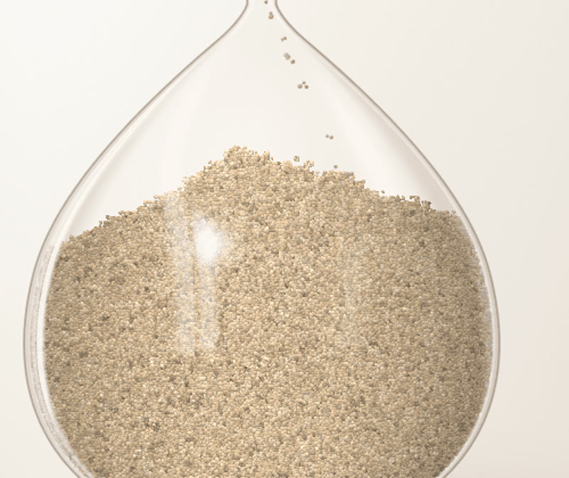

Español · English
Mobile app
On Android the hourglass is in your hand. Move it, or tilt the phone, and the sand slides and leans to one side: the surface sits on a diagonal, higher on one side than the other. Lay the phone down to pause. Flip it to start over.
